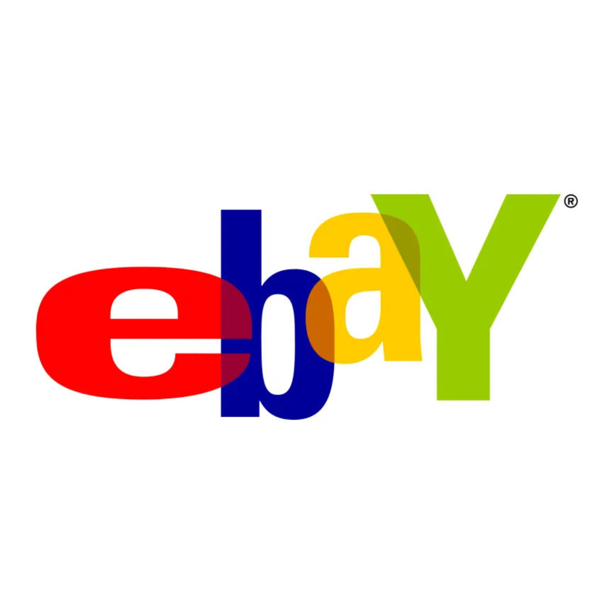

“eBay” é a última paródia do álbum Poodle Hat e foi baseada na música “I Want It That Way”, da boy band Backstreet Boys. Nela, o narrador descreve uma variedade de objetos incomuns que comprou no eBay, um site de leilões e comércio eletrônico. Entre os itens mencionados estão um roupão rosa usado, um raro globo de neve em perfeito estado, uma bandeja de TV dos Smurfs, uma pedra de estimação, um despertador do ALF, uma peruca antiga de William Shatner, bugigangas, uma bolsa de golfe ligeiramente danificada, bonecos Beanie Babies novos com etiquetas vendidos por alguém da Noruega, relógios, um cinzeiro de The Dukes of Hazzard, uma lancheira de Pac-Man Fever, um lote de meias tubulares vintage, lenços de papel usados por Dr. Dre, um pôster de Farrah Fawcett, dispensadores de doces PEZ e uma torradeira.
Inicialmente, “Weird Al” Yankovic pretendia produzir um videoclipe para a música, mas desistiu da ideia porque, naquela época, o eBay estava realizando uma campanha publicitária com celebridades cantando paródias musicais sobre o site. Yankovic explicou posteriormente que não queria que sua música parecesse um comercial da plataforma. Em retrospecto, porém, reconheceu que provavelmente deveria ter produzido o vídeo, pois acredita que ele poderia ter se tornado um de seus maiores sucessos.
Apesar da ausência de um videoclipe oficial na época do lançamento, “eBay” tornou-se uma das músicas mais populares de Yankovic, figurando entre suas faixas mais baixadas em plataformas digitais. A canção também possui uma particularidade em suas apresentações ao vivo: antes de ser executada integralmente em um show, havia aparecido apenas como parte de um medley. Sua primeira apresentação completa ocorreu durante a turnê Bigger & Weirder.
Yeah
A used… pink bathrobe
A rare… mint snowglobe
A Smurf… TV tray
I bought on eBay
My house… is filled with this crap
Shows up in bubble wrap
Most every day
What I bought on eBay
Tell me why (I need another pet rock)
Tell me why (I got that Alf alarm clock)
Tell me why (I bid on Shatner’s old toupee)
They had it on eBay
I’ll buy… your knick-knack
Just check… my feedback
“A++!” they all say
They love me on eBay
Gonna buy (a slightly-damaged golf bag)
Gonna buy (some Beanie Babies, new with tag)
(From some guy) I’ve never met in Norway
Found him on eBay
I am the type who is liable to snipe you
With two seconds left to go, whoa
Got PayPal or Visa, what ever’ll please ya
As long as I’ve got the dough
I’ll buy… your tchotchkes
Sell me… your watch, please
I’ll buy (I’ll buy, I’ll buy, I’ll buy…)
I’m highest bidder now
(Junk keeps arriving in the mail)
(From that worldwide garage sale) (Dukes Of Hazzard ashtray)
(Hey! A Dukes Of Hazzard ashtray)
Oh yeah… (I bought it on eBay)
Wanna buy (a Pac-Man Fever lunchbox)
Wanna buy (a case of vintage tube socks)
Wanna buy (a Kleenex used by Dr. Dre), used by Dr. Dre
(Found it on eBay)
Wanna buy (that Farrah Fawcett poster)
(Pez dispensers and a toaster)
(Don’t know why… the kind of stuff you’d throw away)
(I’ll buy on eBay)
What I bought on eBay-y-y-y-y-y-y-y-y-y